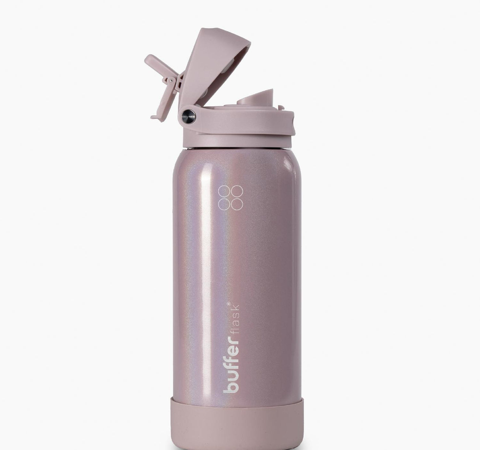

Descripción
La termo botella Velvet Glitter Buffer Flask es un producto diseñado para mantener la temperatura de las bebidas durante un período prolongado. Su diseño brillante y moderno combina funcionalidad con estilo, siendo ideal para llevar bebidas calientes o frías a cualquier lugar. Se presenta con una triple capa de aislamiento que asegura la conservación de la temperatura. Su base de silicona antideslizante proporciona seguridad y evita abolladuras.
Buffer cuenta con un estudio "THERMO SCIENTIFIC" para garantizar la ausencia de plomo y BPA en sus productos.
Ficha Técnica
- Capa de acero interior 304
- Capa de cobre
- Capa de acero exterior
- Silicona
- Goma antideslizante
- Capacidad: 1 litro
- Medidas:27 cm x 9.5 cm
- Peso: 0.5 kg
Sobre Buffer
Buffer Flask es una marca chilena que diseña y fabrica botellas y vasos térmicos de alta calidad. Su enfoque está en ofrecer materiales durables, formatos cómodos y soluciones prácticas en un producto que no deja de verse atraactivo. "Nos obsesiona mantener cada bebida como debe ser: fría cuando debe ser fría, caliente cuando debe ser caliente. Porque un buen producto no solo debe verse bien. También debe funcionar bien donde vayas."